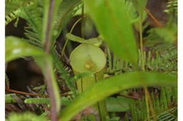
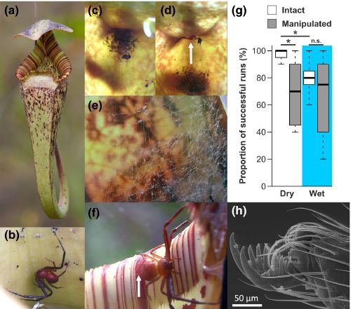

Nepenthes
Nepenthes is a genus of pitcher plant with a rather unique trait: various small organisms live inside of them. Fly larvae, spiders, ants, and even a species of crab make their homes inside of these carnivorous plants. This is unusual. How do the creatures survive living in a plant designed to trap and kill small insects? How does this benefit the pitcher plant? Amazingly, some of these animals are so adapted to the Nepenthes plants that they cannot survive anywhere else.
Mutualism
We do not yet fully understand the complex relationships between Nepenthes plants and the pitcher fauna. Are the infauna parasitic, "stealing" food from the pitchers? Or is their relationship a form of mutualism, where both parties benefit?
The benefits for the infuana are fairly clear: food and shelter. The digestive pools in the pitchers provide an aquatic home to a surprising number of species, and a few larger insects and spiders have learned to live within the pitcher. For the plant itself, the infauna may provide additional cleaning. Take, for instance, Colobopsis schmitzi ants, living within the Nepenthes bicalcarata. The pitcher traps and provides food for the ants, as well as granting self shelter. In return, the ants keep the pitcher's trapping surface clean and slippery while also defending the plant against predators.
In the case of the crab spider, scientists have observed the spider catching prey that drew too near the pitcher. After the spider finished feeding, it would drop the carcass into the pitcher, allowing it to digest and feed on the remains.
Living in a Pitcher Plant
The pitchers of Nepenthes plants are specialized organs that trap, kill, and digest arthropods. Lined with slippery surfaces and filled with digestive, acidic fluids, insects are lured within to drown and be digested. Some species even have particularly sticky fluids that keep prey held within.
Because of this, organisms must either be uniquely adapted to swimming in the digestive fluids or be capable of staying on the safe yet slippery inner surface. Fascinatingly, crab spiders will cover the inside of their host pitcher with a fine silk mesh, possibly helping them navigate safely.
Survey
Advantages to Being "Robbed"
At first glance, it may seem that the Nepenthes pitchers are losing in this arragement. After all, isn't the symbiote stealing food? And yet, studies have found this to be the opposite. It seems that while empty pitchers do receive more nutrients from their prey, the visiting arthropods will often catch more prey than the pitcher alone. Even though the insects or spiders steal that "first taste" of the prey, the pitcher receives more nutrients over all. Alternatively, some animals will fish prey from within the pitcher. Here, the pitcher gets the first taste, and the crab or spider or other guest keeps the pitcher clean and healthy in exchange for food.